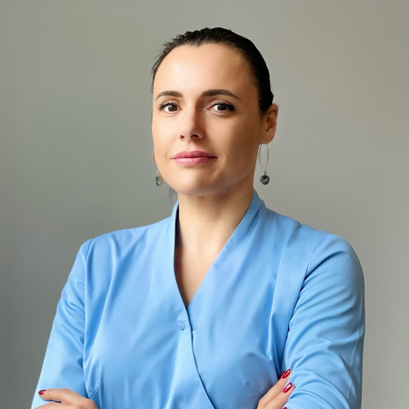
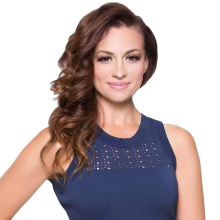

Meie spetsialistid

JekaterinaNANOASIA · World of BeautyMeditsiiniline kõrgharidus · meeskonnas alates 2017Tutvu lähemalt
Teid teenindab Jekaterina - pädev sertifitseeritud NANOASIA ja World of Beauty spetsialist, kellel on meditsiiniline kõrgharidus.
Jekaterina on töötanud meie ettevõttes alates 2017 aastast ning teeb oma tööd hoole, personaalse lähenemise ja armastusega!
Jekaterina töötab igas vanuses klientidega ning nii naiste kui meestega. Ta aitab teil sukelduda Lõuna-Korea nanotehnoloogia maailma, sest armastab ka ise NANOASIA tooteid, tunneb hästi nende omadusi ja toimimist. Ta on teadlik meie kaubamärgi ohutusest ja tervisliku ilu filosoofiast.
Jekaterina omab aastatepikkuseid kogemusi NANOASIA´ga ning on koolitanud koostööpartnereid nii Eestist kui Euroopast.

OksanaNANOASIA · Bellapierre CosmeticsÜle 15 aasta kogemust ilutööstusesTutvu lähemalt
Teid teenindab Oksana - pädev sertifitseeritud NANOASIA spetsialist, kes on lisaks Nanoasia brändi üks esindajatest.
Oksana on töötanud eelnevalt erinevates ilutööstustes üle 15. aasta. Ta omab põhjalikke teadmisi Lõuna-Korea nanotehnoloogiatest ja tervislikust ilust. Ta on teadlik meie kaubamärgi ohutusest ja tervisliku ilu filosoofiast.
Oksana pakub klientidele ka meie teise brändi Bellapierre Cosmetics 100% mineraalkosmeetika jumestusteenuseid ja konsultatsioone.
Oksana on töötanud NANOASIA ettevõttes algusaastatest ning teeb oma tööd hoole, personaalse lähenemise ja pühendumusega!